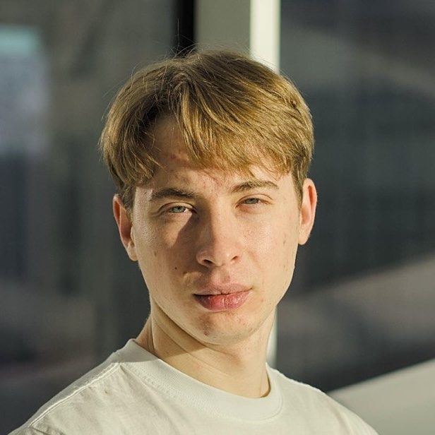
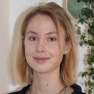
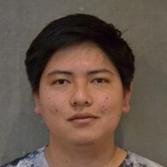
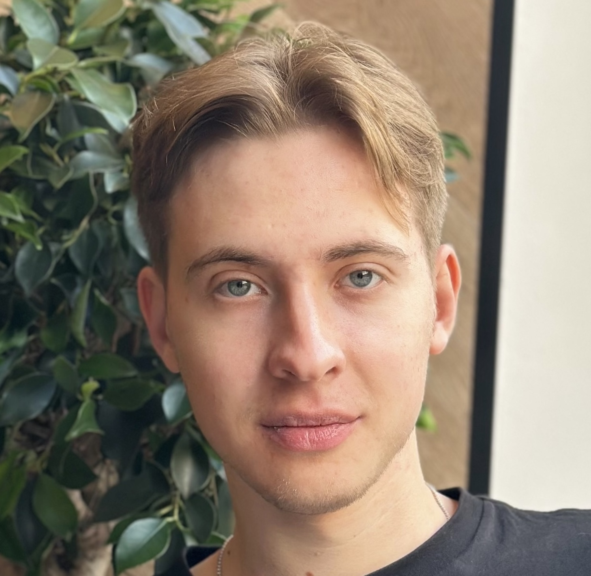
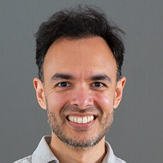
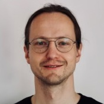

AI for DNA, Chemicals and Microbiome
Models, Mechanisms and Applications
About the workshop
This workshop brings together researchers in machine learning, biology, and chemistry to advance AI methods for molecular and biological systems. It focuses on foundation models trained on genomic and molecular data, as well as multimodal approaches for integrating omics data.
We also dive into a novel field of mechanistic interpretability to understand how well models capture biological processes.
Microbiome data serves as a central application area, highlighting challenges in sparse, compositional, and heterogeneous data, and motivating generalizable modeling approaches.
The aim is to map the current state of the field, identify key challenges in modeling and evaluation, and foster new collaborations.
Speakers & Themes
Foundation models

Roman BushuievBio

Frederikke Isa MarinBio
Mechanistic interpretability
Ihor KendiukhovBio

Edir Sebastian Vidal CastroBio
Multimodality
 Dewei HuBio
Dewei HuBio
Benchmarking

Anton BushuievBio
Microbiome: data and applications

Shiraz ShahBio

Damian Rafal PlichtaBio
Organizers
Agenda
Morning coffee
DreaMS: a Foundation Model for Tandem Mass Spectrometry
Roman Bushuiev, PhD student at Czech Institute of Informatics, Robotics and Cybernetics
DNA Foundation Models
Frederikke Isa Marin, Postdoctoral Researcher at University of Copenhagen
Proteome-Augmented Metabolomics Improves Disease Risk Prediction in Population Cohorts
Dewei Hu, PhD Student at University of Copenhagen
Lunch
Opening the Black Boxes of Biological AI: Mechanistic Interpretability of Single-Cell Foundation Models
Ihor Kendiukhov, Founder at Biodyn
Ihor will also present the discovery and extraction of a compact developmental algorithm from inside scGPT: a representation of blood cell differentiation that we surgically removed from the model as a standalone tool roughly a thousand times smaller, faster, and competitive with established bioinformatics methods. This points toward a new way of creating bioinformatics algorithms, not by designing them, but by extracting them from foundation model internals. Ihor will close by discussing where biological foundation models can be trusted, where they should not be, and how interpretability bridges the gap between black-box AI and the mechanistic understanding that biology demands.